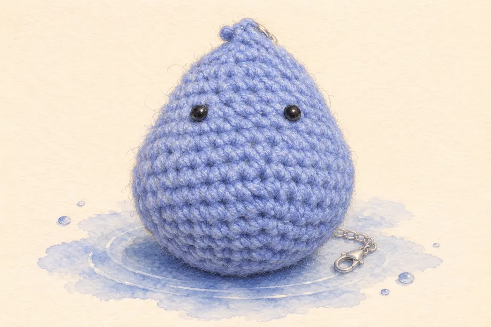
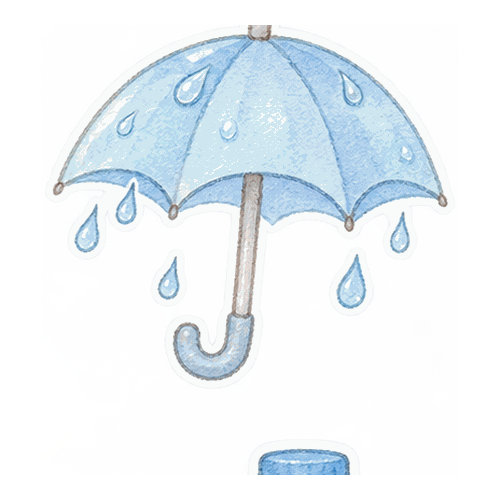
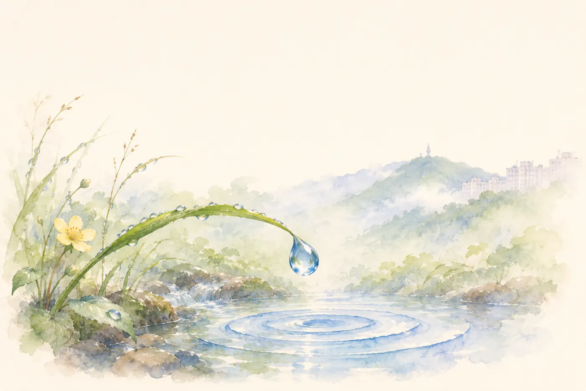
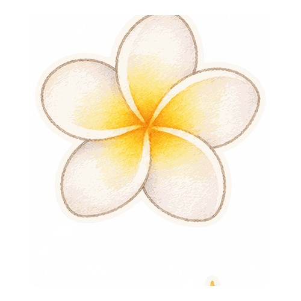
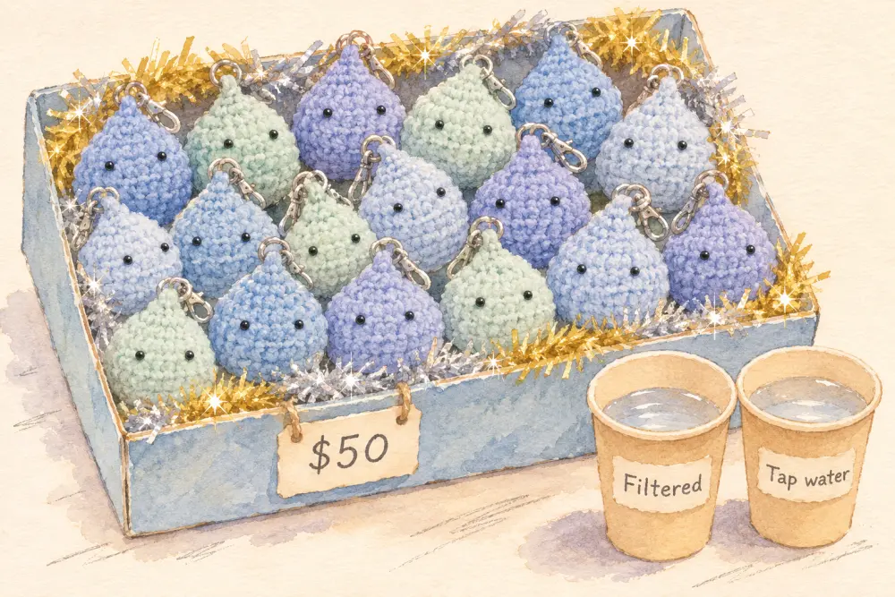
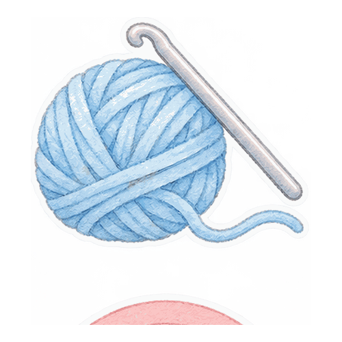
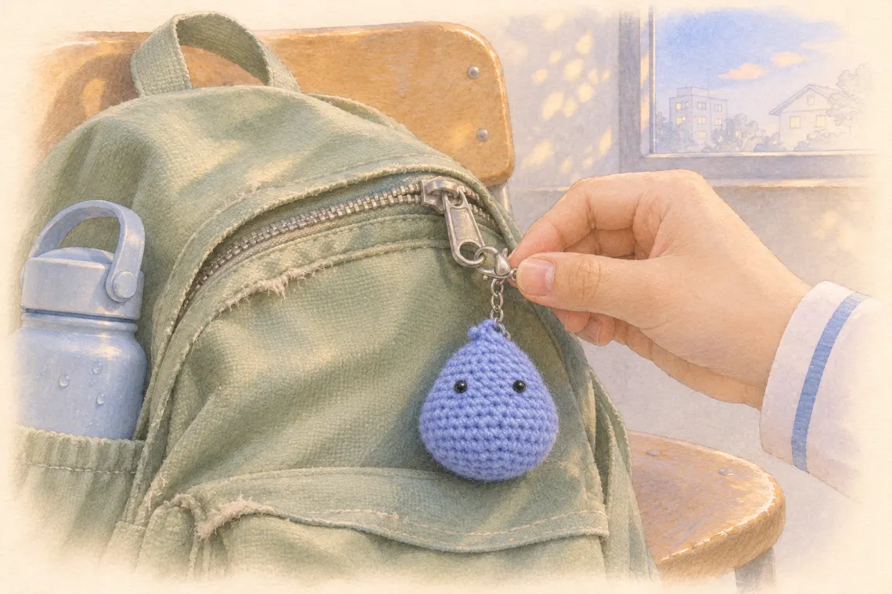
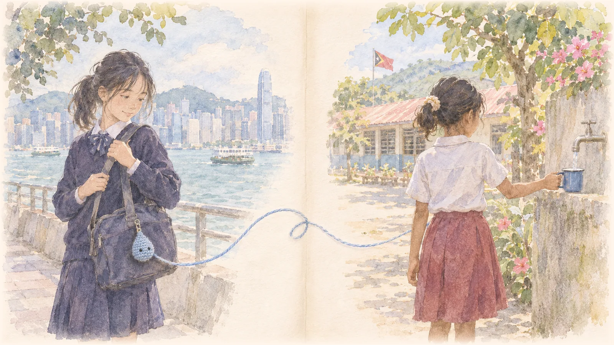

a little yarn story · about GX Foundation’s drinking-water project
Pocket Rain
👆 tap · drag · pet her

They could have crocheted me into any shape.
So why a drop?
follow my thread ↓
chapter 1 · two cups
At our school stall, there were two paper cups.
One said Filtered. One said Tap water. Which one would you drink?
tap one ↑
We even brought TDS meters — little pens that measure what’s dissolved in water. In Hong Kong, two cups of water can be a guessing game.

chapter 2 · here, rain is just weather
In Hong Kong, the rain just hangs
on a thread of grass.

tap the clouds · 0 drops
Nobody here worries about a raindrop. Twist a tap and water appears — the most boring magic trick in the world.
But I kept wondering: is there somewhere this magic trick isn’t boring at all?
chapter 3 · south, and further south
So I unravelled my yarn
and followed it about 3,600 km south.
keep scrolling ↓
chapter 4 · water you have to wonder about
In Timor-Leste,
a lot of water makes you stop and wonder.
of surface water there is polluted, according to GX Foundation. A stream can look clear and still make someone sick.
GX’s machines use nanotechnology filters to turn unsafe water into water you can drink straight away.

chapter 5 · someone is waiting
And there,
someone was holding out a cup.

chapter 6 · one, then another
In July 2024, GX Foundation launched its
Direct Potable Water Project in Timor-Leste.
The pilot sites were all the churches, all the hospitals and some schools in Timor-Leste — places people already go.
100 drops — one for each water purification machine. Swipe across them to light them up.
0 / 100 machines
gallons of free drinking water a year (projected)
saved on buying drinking water locally
plastic bottles that don’t need to be used
Figures from GX Foundation’s banner and website; some are projections. Read the project page ↗
chapter 7 · so, why a drop?
Because a drop is the smallest piece
of something very big.
One drop can’t fill a cup. A hundred machines can. And one little drop on your schoolbag can remind you how it all started — with a question: “which cup would you drink?”

Stitch by stitch. One club, one school.

last chapter · back to the schoolbag
Pick one. Take her home.
Collect at the DGS GX Club stall · preview only, no payment taken.

click.

Next time you reach for your schoolbag,
remember the hand that held out a cup.